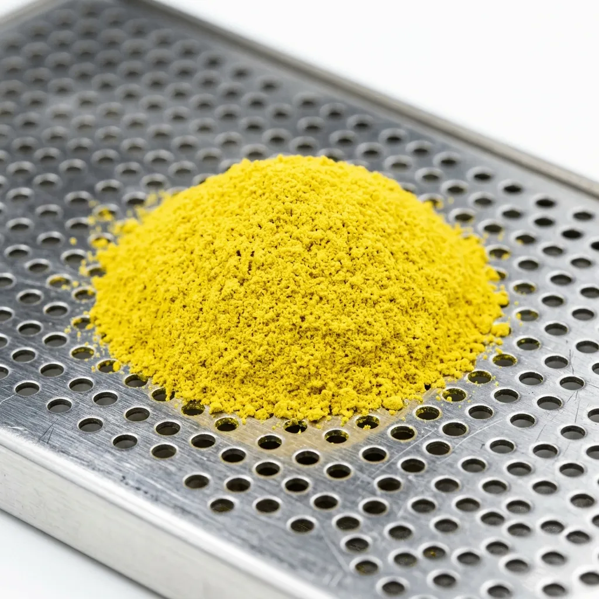

The flagship offering of our laboratory is the Minus-196°C Alba Truffle Isolate, a product that redefines the integration of rare fungi into advanced culinary applications. Standard white truffles rapidly lose their most defining aromatic compound, highly volatile bis(methylthio)methane, immediately upon harvesting and exposure to oxygen. Traditional oil infusions fail to capture its true complexity. By submerging the fresh alba truffles in liquid nitrogen, our cryo-milling methodology instantly halts the dissipation of this critical compound. The vitrification process perfectly traps the bis(methylthio)methane inside the solid state. Once pulverised into a 10-micron dust, the intense aromatics remain securely locked within the molecular structure until hydrated in the kitchen. This isolate delivers a perfectly pristine, sustained truffle profile that cannot be achieved through any standard extraction method.
Request AllocationCulinary Isolates
The Cryotex inventory represents the absolute limit of culinary concentration and thermodynamic preservation. These are not standard, degraded culinary spices; they are hyper-concentrated clinical isolates engineered specifically for advanced molecular gastronomy. By instantly vitrifying and micro-milling rare raw botanicals, we deliver pure, unadulterated flavour compounds in a perfectly stable format. Each isolate functions as a highly potent chemical matrix, allowing culinary directors to introduce complex aromatics with surgical precision and absolutely zero textural interference.

Minus-196°C Alba Truffle Isolate
Vitrified Citrus Essential Powders
Standard citrus zest extraction invariably introduces unwanted bitterness due to the unavoidable inclusion of the white pith, alongside the rapid oxidation of delicate surface oils. Our vitrified citrus essential powders, primarily focusing on rare Japanese yuzu and Calabrian bergamot, solve this structural limitation. The raw peels are flash-frozen to exactly -196°C, instantly solidifying the volatile surface oils. During the intense cryogenic milling phase, the frozen oil vesicles undergo complete micro-shattering, cleanly separating the pure aromatic compounds from the fibrous, bitter cellulose structure. The resulting 10-micron citrus isolate delivers a hyper-concentrated burst of uncorrupted essential oil, entirely devoid of astringency. This clinical separation ensures that advanced beverage directors and research kitchens can deploy the absolute purest expression of citrus aromatics in clear suspensions.
Request AllocationBespoke Cryogenic Processing
For establishments operating at the highest levels of global gastronomy, Cryotex offers an exclusive bespoke cryogenic processing service. Culinary directors may submit their own proprietary rare ingredients or foraged botanicals for professional vitrification and micro-milling at our Reykjavik facility. This allows kitchens to create custom, hyper-concentrated isolates tailored specifically to their distinct tasting menus. To ensure optimal thermodynamic extraction, the submitted organic matter must adhere to strict clinical parameters. We require a precise minimum batch weight of five kilograms to properly calibrate the industrial jet mill, and the raw ingredient must possess an internal moisture content between 12% and 18% for successful flash-freezing without shattering the equipment. All incoming materials undergo rigorous pre-processing laboratory analysis to confirm compatibility with the extreme -196°C environment.
Initiate Bespoke Audit